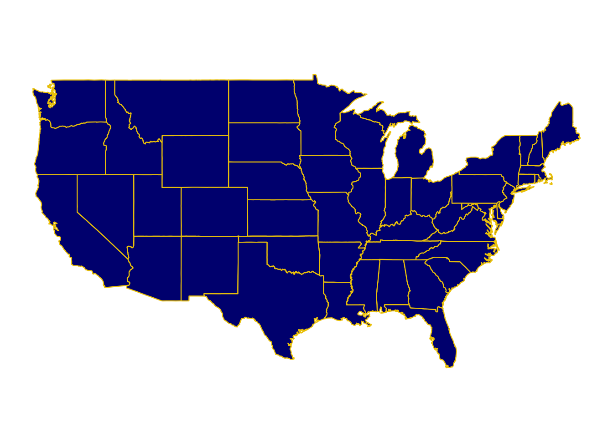
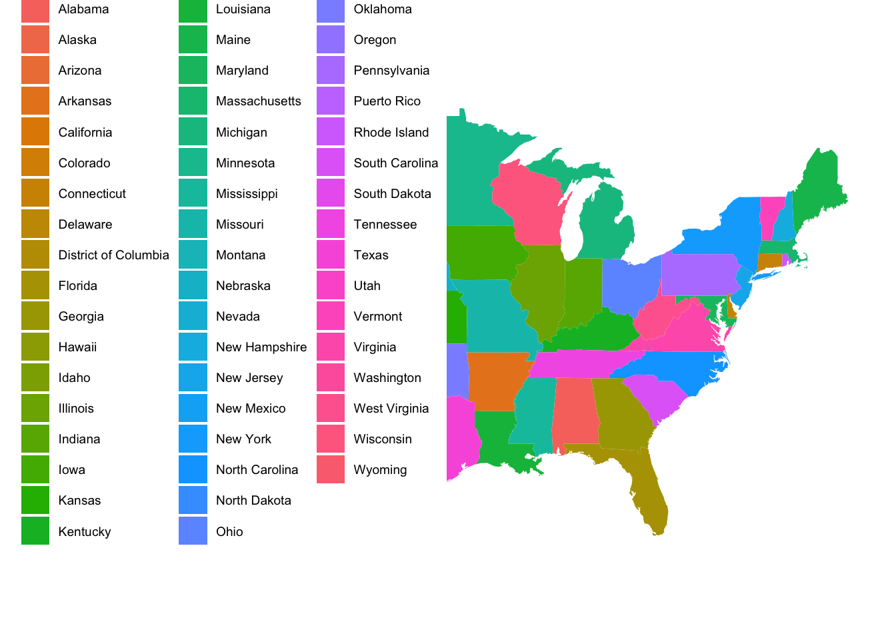

Maps
Create Original Map
geom_map() matches each row’s map_id to a region in a separate map data set. expand_limits() is required, or ggplot won’t know the x/y range to show. coord_map() gives a nicer projection than the default, and theme_map() removes the axes.

Your turn
Edit the code so that each state is a different color
states already has a region column — you can map it to fill the same way it’s mapped to map_id

Your turn: ACS data
Load Data
Variable information:
-
med_age: median age -
med_income: median age -
race_X: estimated population of (self-reported) race -
born_in_state: estimated population who were born in state -
X_age_married: average age at first marriage for self-reported male and female respondents -
hs_diploma,associate_degree,prof_degree, etc.: estimated number with a high school diploma, associate’s degree, professional degree, etc. -
internet_X: estimated number of people who have internet services
ACS Data Starter Map
Important note: this is the same geom_map() you just used, now with real data. acs_state_data only needs a column with the state name (state). geom_map() looks up the matching shape in map = states for you.

Your turn 1
Comment out the expand_limits line using #. What happened?
Your turn 2
Edit your chloropleth map by:
- Choosing a different variable in
acs_state_datato map tofill - Choosing a different color scale
- Updating the title, axis labels, and legend title
Try it: Proportional symbol maps
So far we’ve used geom_map() to fill in regions. But sometimes you want to show where specific things are located, with size showing how big they are. To do this, we add a second layer with geom_point(), using latitude/longitude coordinates.
Load Data
The {maps} package (already loaded) includes us.cities, a data set of US cities and their populations (as of 2006). We’ll filter to cities with a population over 100,000, and exclude Alaska and Hawaii so the map isn’t stretched out.
-
name: city and state -
pop: population -
lat,long: the city’s location
Starter map: base + points
Notice that geom_map() and geom_point() each have their own data. The base map uses states; the points use big_cities. This is the same pattern you’ll need on your homework.
ggplot(states) +
geom_map(aes(map_id = region),
map = states,
color = "white",
fill = "gray90") +
geom_point(data = big_cities,
aes(x = ___, y = ___, size = ___),
color = "navyblue",
alpha = 0.6) +
scale_size(range = c(1, 10), labels = scales::comma) +
expand_limits(x = states$long, y = states$lat) +
coord_map() +
theme_map()Error in parse(text = input): <text>:7:24: unexpected input
6: geom_point(data = big_cities,
7: aes(x = __
^Your turn
- Fill in the
___to overlay the points on the map - Adjust the point
sizerange,alpha, and color until you’re happy with how the map looks
# your turn